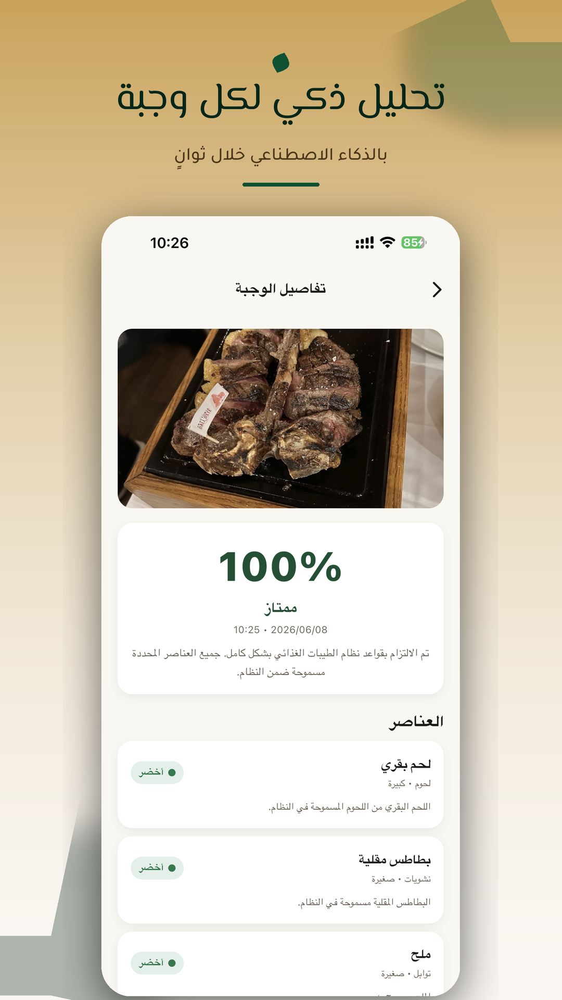
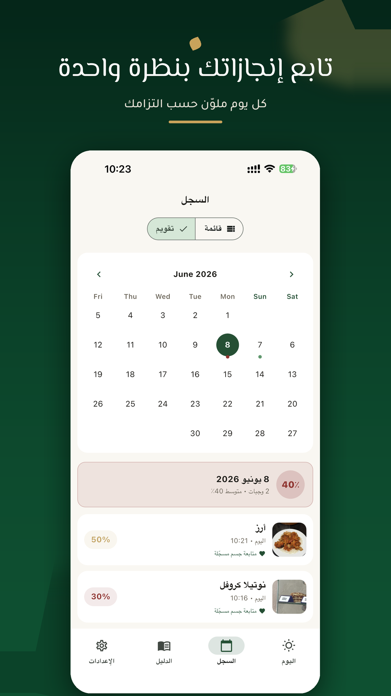
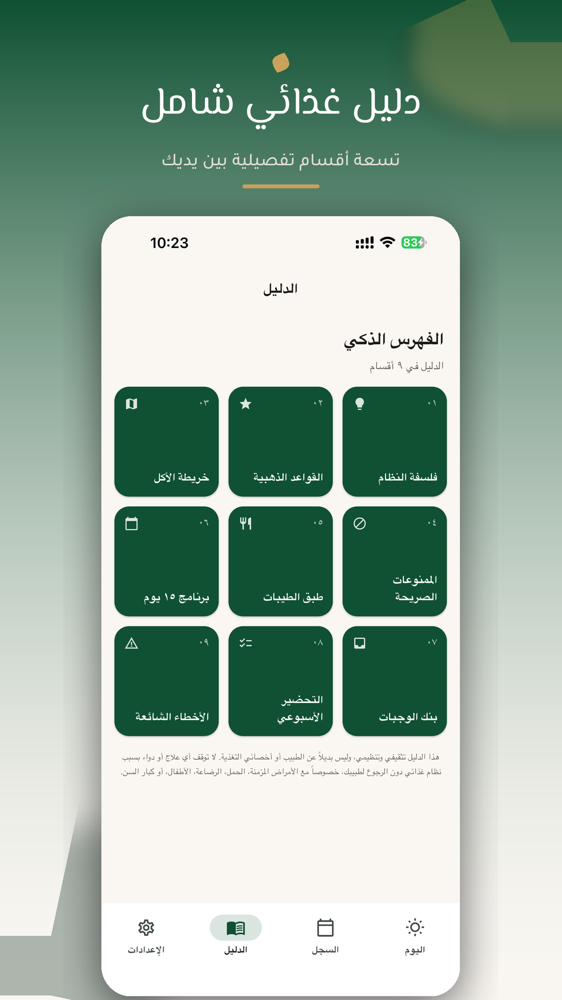
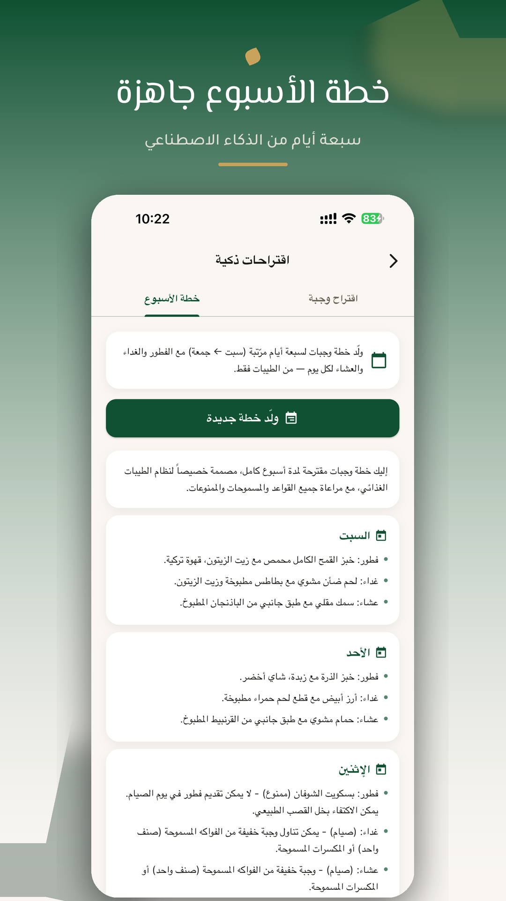
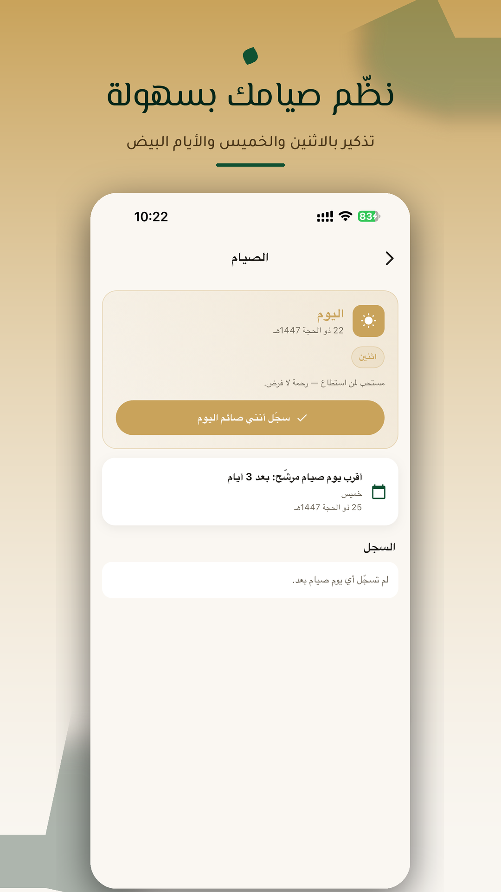

الطيبات
تتبّع غذائك بوعي
صوّر وجبتك فيحلّلها التطبيق ويعرض التزامها بنظام الطيبات — مع تقدير السعرات والعناصر الغذائية، وعدّاد يومي، ودليل وجبات كامل، وتذكيرات مرنة.
Download on theApp Storeصوّر وجبتك فيحلّلها التطبيق ويعرض التزامها بنظام الطيبات — مع تقدير السعرات والعناصر الغذائية، وعدّاد يومي، ودليل وجبات كامل، وتذكيرات مرنة.
Download on theApp Storeمن الصورة إلى القرار: تحليل فوري، أرقام غذائية، ودليل يمشي معك خطوة بخطوة.
صوّر طبقك واحصل على نسبة الالتزام مع حكم لكل عنصر بألوان الإشارات: أخضر أو أصفر أو أحمر.
تقدير للسعرات والماكروز (بروتين/كارب/دهون) والعناصر الدقيقة لكل صنف في الوجبة.
تابع سعرات يومك مقابل هدف تختاره بنفسك، مع توزّع الماكروز وشريط تقدّم واضح.
وجبات طيبة جاهزة للفطور والغداء والعشاء والسناك وأيام الصيام، مع المكوّنات وطريقة التحضير.
تقويم شهري ملوّن، منحنى التزام ٣٠ يوم، ومتابعة استجابة جسمك بعد كل وجبة.
متتبّع للإثنين والخميس والأيام البيض (١٣/١٤/١٥ هجري) مع تذكيرات.
تذكيرات مرنة ونصائح يومية متنوّعة، كلها اختيارية وقابلة للضبط.
بياناتك تُخزَّن على جهازك، ولا نبيعها ولا نستخدم أدوات تتبّع، وحذف الحساب من داخل التطبيق.
تحليل الوجبة، السجل الملوّن، الدليل الذكي، خطة الأسبوع، والصيام.





حمّل التطبيق الآن وصوّر أول وجبة لك — واعرف مدى توافقها مع نظام الطيبات في ثوانٍ.
Download on theApp Storeهذا التطبيق أداة لتتبّع نظام غذائي تختاره بنفسك، والقيم الغذائية فيه تقديرات للوعي العام لا قياسات دقيقة. لا يقدّم استشارة طبية ولا يدّعي علاج أي مرض. استشر طبيبك أو أخصائي تغذية قبل اتباع أي نظام غذائي، خاصةً إن كنت تعاني مرضاً مزمناً أو كنت حاملاً أو مرضعاً أو دون 18 عاماً.